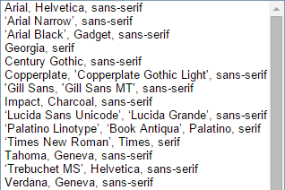

title: Building a theme with GS Custom Settings - advanced category: CMS img: http://i.imgur.com/HzihL7G.png tags: GetSimple PHP plugin theme layout: article published: true description: Example use cases for the GetSimple KO Site settings plugin intro: |
In this tutorial, we'll be building a theme which will demonstrate all the features in GS Custom Settings, combined with the power of the I18n plugin, and 3 different templates: page, blog, and contact. The theme essentially mimics Todd Motto's Github blog. If you're impatient, or rather learn by looking at the code, you can download this theme at the bottom of the article.
Anyhow, the theme folder will look like this:
GSCS-sample-theme/
├─ template.php
├─ blog.php
├─ contact.php
├─ functions.php
├─ inc/
| ├─ footer.inc.php
| ├─ header.inc.php
| └─ dynamic_css.inc.php
├─ assets/
| ├─ favicon.png
| ├─ style.css
| └─ lib/
| ├─ html5shiv.js
| ├─ uikit.css
| └─ fontawesome.css
├─ settings.json
└─ lang/
├─ fr_FR.json
└─ de_DE.json
This tutorial will focus on how to integrate GS Custom Settings in theme development, if you need to get familiar with regular GetSimple theming, read the tutorial in the wiki. It's also handy to keep a browser tab open on the complete template tags reference.
First we need to consider which settings will be adjustable in the template. For inspiration, you could have a look at Tumblr theme options, ThemeForest Wordpress' Select options, or even Blogger template options. Generally, you will want to provide settings in three four different sections:
locked/hidden in the interface, to facilitate version checking, include credits and links, and fixed information.In our case we will provide the following settings:
| Setting label | Setting lookup | Setting type | Setting options/ defaults/ details |
| Styling | |||
| Headings font | css_hfont | select | / |
| Headings text color | css_hcolor | color | / |
| Body font | css_pfont | select | / |
| Body text color | css_pcolor | color | / |
| Link text color | css_acolor | color | / |
| Theme style | css_theme | radio | Options: square / circle / rounded |
| Output | |||
| Name | contact_name | text | |
| contact_email | text | ||
| Phone/ Fax | contact_phone | textarea | / |
| Address | contact_addr | textarea | / |
| Headline | profile_h | text | Default: Hi, I'm <a href="http://twitter.com/tyblitz">@Tyblitz</a>! |
| Lead paragraph | profile_desc | textarea | Default: Developer behind GS Custom Settings & tons of useless code. 23, based in Belgium, communications agent and all-things-web enthusiast. |
| Profile image | profile_img | image | Default: https://s3.amazonaws.com/uifaces/ faces/twitter/mantia/128.jpg |
| Data | |||
| Blog-post meta keyword | blog_keyword |
text | Default: _blog |
| Blog-post date format | blog_date |
select | / |
| Blog-post excerpt length | blog_ex_len |
text | 0 = no post-excerpt, 'full' = full post in blog-roll |
| Link on blog-post title? | blog_show_link |
checkbox | / |
| Show blogpost tags? | blog_show_tags |
checkbox | / |
| Show featured image? | blog_show_img |
checkbox | / |
| # of blog-posts/page | blog_list_len |
text | Default: 10 |
| Blog is homepage? | blog_home |
checkbox | / |
| Disqus username | data_disqus |
text | Leave empty to disable |
| Google Analytics | data_ga |
text | Leave empty to disable |
| Social Profile 1 | social_1 |
text | Leave empty to disable |
| Social Profile 2 | social_2 |
text | Leave empty to disable |
| Social Profile 3 | social_3 |
text | Leave empty to disable |
| Meta-settings | |||
| Theme Version | meta_version |
text | Access: locked |
| Theme Link | meta_url |
text | Access: locked |
| Author | author |
text | Access: locked |
| Author URL | author_url |
text | Access: locked |
As with all GetSimple theme files, first include the following statement to prevent direct file access:
<?php if(!defined('IN_GS')){ die('you cannot load this page directly.'); } ?>
The <head> tag is pretty straightforward too, nothing different from regular GS theming:
<title><?php get_page_clean_title(); ?> - <?php get_site_name(); ?></title> <meta charset="utf-8"> <meta name="description" content="<?php get_page_meta_desc(); ?>"> <meta name="viewport" content="width=device-width,initial-scale=1,maximum-scale=1"> <link rel="stylesheet" type="text/css" href="<?php get_theme_url(); ?>/res/font-awesome.min.css"> <link rel="stylesheet" type="text/css" href="<?php get_theme_url(); ?>/res/style.css"> <link rel="stylesheet" type="text/css" href="<?php get_theme_url(); ?>/res/uikit.css"> <link rel="stylesheet" type="text/css" href='http://fonts.googleapis.com/css?family=Open+Sans'> <script src="<?php get_theme_url(); ?>/res/html5shiv.min.js"></script>
We provide an option in the theme to show or hide the blog page's title (when it's the homepage it should be hidden). The setting blog_show_title is of type checkbox and so returns true or false and can be simply checked for by doing the following:
<?php if (return_setting('theme', 'blog_show_title')) { ?>
<h1> <?php get_setting('theme', 'blog_show_title'); ?> </h1>
<?php } ?>
But there are also some settings with the text/ textarea type that you want to output only if they have an actual value, like the Disqus or Google Analytics Javascript. Instead of making new checkbox settings, you can check if text fields are non-empty by using the exact same method as for checkboxes. The if clause evaluates to false if the field's value contains 0 characters.
<?php if (return_setting('theme', 'data_disqus')) { ?>
<div id="disqus_thread"></div>
<script type="text/javascript">
var disqus_shortname = '<?php get_setting('theme', 'data_disqus'); ?>';
(function() { var dsq = document.createElement('script'); dsq.type = 'text/javascript'; dsq.async = true;
dsq.src = '//' + disqus_shortname + '.disqus.com/embed.js'; (document.getElementsByTagName('head')[0] ||
document.getElementsByTagName('body')[0]).appendChild(dsq); })();
</script>
<noscript>Please enable JavaScript to view the <a href="https://disqus.com/?ref_noscript" rel="nofollow">comments.</a></noscript>
<?php } ?>
With option settings like radio or select, you should be careful with if clauses: if the first option is selected (index=0), doing if (return_setting('theme','options')) will be false. Only use this if the first option means false, eg: show social buttons options: (0) 'none', (1) 'three', (2) 'five'.
For the blog, we add a function in the functions.php file because it uses i18n plugin functions. Because we want to be able to configure the output, we need to use return_i18n_search_results (see the details) and not the display function. The i18n plugin makes available a global variable $language on the page which holds the language for the current page.
function gscs_get_blog($start, $end=1) {
global $language;
$srch = return_i18n_search_results('blogpost', null, $start, $end, 'date', $language);
$show_categories = return_setting('theme', 'blog_show_cat');
$show_images = return_setting('theme', 'blog_show_img');
$show_tags = return_setting('theme', 'blog_show_tags');
$show_permalink = return_setting('theme', 'blog_show_permalink');
$excerpt_length = return_setting('theme','blog_excerpt_length');
$date_format = return_setting('theme','blog_date_format');
foreach($srch['results'] as $item) {
?>
<li class="uk-article">
<h3 class="uk-article-title"><?php if (!$show_permalink) get_i18n_link($item->id); else echo $item->title; ?></h3>
<div class="post-meta uk-article-meta">
<time datetime="<?php echo date('F jS, Y' , $item->pubDate); ?>"><?php echo date('F jS, Y' , $item->pubDate); ?></time>
</div>
<?php if ($show_images) { ?>
<img src="http://placehold.it/192x128">
<?php }
if ($excerpt_length)
echo '<p class="uk-article-lead">' . substr(strip_tags($item->content), 0, 50) . '</p>';
if ($show_tags) { ?>
<ul class="tags">
<?php foreach ($item->tags as $tag)
echo '<li><a href="#" class="uk-badge">' . $tag . '</a></li>';
?>
</ul>
<?php } ?>
</li>
<?php }
}
Sometimes you might want to have key-value pairs, like for the blog's date format. In the UI you want to display date formats as human-readable, like so: 20/02/2015, or April 20, 2015. But PHP only understands formats as listed in the docs. Given the setting blog_date_format, the 2 previou In that case you have 2 options:
If you use GS Custom Settings for a theme, make sure to mention in the theme description in the GS Extend repo that your theme requires installing the Custom settings plugin first, or wrap the entire HTML in an if clause, and output a message 'This theme requires GS Custom Settings to work', else you will get a lot of undefined function errors. Here's a sample snippet that you can directly copy paste in your theme's Extend description:
This theme requires [GS Custom Settings](http://get-simple.info/extend/plugin/gs-custom-settings/913/).
and one for in the forum threads:
This theme requires [url=http://get-simple.info/extend/plugin/gs-custom-settings/913/]GS Custom Settings[/url].
Often you need to check whether a setting is valid. When the only check you need is whether a text setting is empty, you can avoid creating a checkbox to 'enable' the setting (eg. a social media link) by checking the string length of the setting's value. When it is an empty string, its length is 0, so PHP will evaluate to false when you call return_setting('theme', 'myTextSetting'). In the setting's description, simply write something like "Leave empty to disable". For example, the text setting social_fb could be outputted as follows:
<?php if (return_setting('theme', 'social_fb'))
echo '<a href="' . return_setting('theme', 'social_fb') . '><i class="fa fa-facebook'></i></a>; ?>
for loopsIf you're using setting output in PHP for or foreach loops, it is wisest to put them in a PHP variable before the loop. Although calls to return/get_setting are not very expensive, it does save some performance.
<?php $show_img = return_setting('theme', 'blog_show_img');
foreach ($items as $item) {
echo '<div class="post">' . ($show_img ? '<img src="">' : '') . '</div>'; ?>
If you need to access many settings (more than 5) in one particular place in your theme, from v0.4 onwards you can use return_setting_group to return an entire group of settings as a PHP array. For the function to work, you should prefix the setting lookups with a common name, followed by an underscore (_); eg. for all profile-related settings, you could have: profile_h for the headline, profile_desc for the description and profile_name for the name. You can then access the returned settings without the prefix. In PHP you could simply do:
<?php $profile = return_setting_group('theme', 'profile');
echo '<h1>' . $profile['name'] . '<h1>';
echo '<h3>' . $profile['h'] . '</h3>';
echo '<p>' . $profile['desc'] . '</p>'; ?>
As soon as you need to do some more advanced stuff (like in the sections Intermediate and Advanced), you will sometimes need to pre-process the output of a setting. In that case, some of the most useful PHP functions to know are:
echo($string) - Outputs the given string.strip_tags($string) - Removes HTML tags from the string.Handy for example if you want to use HTML in the profile description on the page, and use the same setting for social media/ meta descriptions but without HTML.explode($delimiter, $string) - Splits a string into an array on $delimiter. Useful if you want to re-use and pre-process settings with options or fixed formats.str_replace($search, $replacement, $string)strlen($string) - Returns the length of a string. Useful for checking purposes.date($format[, $timestamp]) - Returns a date in the specified $format. Useful for blog posts/ footer copyright/ event dates.substr($string, $start, $length) - Subtracts a part of a string starting at $start and ending at $start + $length. Useful for eg. post excerpts| Label | Lookup | Type |
|---|---|---|
| Name | contact_name |
text |
contact_email |
text |
|
| Address | contact_address |
textarea |
| Fax/ Phone | contact_phone |
textarea |
Outputting content is the most basic functionality of GS Custom Settings. In the example below we output the values of the settings email, phone and address to the contact.php template. The settings are preceded by a FontAwesome icon. Note that if you want textarea settings to preserve multiple lines, you will have to set the CSS white-space property to pre/ pre-wrap/ pre-line.
<address>
<div><p style="white-space: pre;">
<i class="fa fa-fw fa-lg fa-map-marker"></i><?php get_setting('theme', 'contact_address'); ?>
</p></div>
<div><p>
<i class="fa fa-fw fa-lg fa-at"></i><?php get_setting('theme', 'contact_email'); ?>
</p></div>
<div><p style="white-space: pre;">
<i class="fa fa-fw fa-lg fa-phone"></i><?php get_setting('theme', 'contact_phone'); ?>
</p></div>
</address>Another popular example is outputting a copyright notice in the theme footer:
<footer id="site-footer">©
<?php echo date('Y');?> <?php get_setting('theme', 'contact_name'); ?>
</footer>
You may also want to let the user decide which HTML content should be outputted, for example to highlight a part of the phrase, or to customize, eg sidebar widget content. The textarea or text settings may contain HTML. As such, if you had a textarea setting sidebar_html, you could do the following:
<aside><?php get_setting('theme', 'sidebar_html'); ?></aside>
| Label | Lookup | Type |
|---|---|---|
| Show title on blog page? | blog_show_title |
checkbox |
| Profile image | profile_img |
image |
| Lead paragraph | profile_desc |
textarea |
Conditionally showing content is pretty easy, the checkbox setting will either return true or false. The snippet below shows/hides the title of pages using the template blog.php. Useful as you would usually not display the title when the blog is also the homepage.
if (return_setting('theme', 'blog_show_title')) { ?>
<h1><?php get_page_title(); ?></h1>
<?php } ?>You may also want to hide output when a textarea/text/image setting is not set (when the value is an empty string).
If the setting has no container element, you can simply call get_setting and an empty string will be outputted (note: with v0.3 the image setting will return an image with a broken link if you do this).
<?php get_setting('theme', 'profile_desc'); ?>
<?php get_setting('theme', 'profile_img'); ?>
If the setting output does have a container element, you need to check whether it is non-empty with return_setting:
<?php if (return_setting('theme', 'profile_img')) { ?>
<div id="profile-img"><?php get_setting('theme', 'profile_img'); ?><div>
<?php } ?>
| Label | Lookup | Type |
|---|---|---|
| Custom CSS | css_custom |
textarea |
Custom CSS is the easiest way to provide users a way to change the visual style without touching the template, but of course it requires them to go look for classes and id's in the browser, and at least have a basic understanding of CSS, so not very user-friendly. You should output this setting at the end of your dynamic CSS, so that if the user makes a syntax error nothing else gets lost.
<style>
/* other style rules */
<?php get_setting('theme', 'custom_css'); ?>
</style>
| Label | Lookup | Type |
|---|---|---|
| Theme color 1 | css_pri_color |
color |
| Theme color 2 | css_sec_color |
color |
| Headings font | css_hfont |
select |
| Headings text color | css_hcolor |
color |
| Body font | css_pfont |
select |
| Body text color | css_pcolor |
color |
The colors take any valid CSS colors (color name, HEX, RGB, HSL or RGBA). You would keep all fixed CSS in a separate stylesheet style.css, and include the changeable CSS in your header.inc.php or dynamic_css.inc.php or something alike in a <style> tag. Below is an example of how you would output dynamic styling options into your theme:
<style>
h1,h2,h3,h4,h5,h6, #site-nav a {
color: <?php get_setting('theme', 'css_hcolor'); ?>;
font-family: <?php get_setting('theme', 'css_hfont'); ?>;
}
body, body p, body ul, body ol, body blockquote {
color: <?php get_setting('theme', 'css_pcolor'); ?>;
font-family: <?php get_setting('theme', 'css_pfont'); ?>;
}
#profile-social a, #blog-roll .tags li a, .tags li div {
background-color: <?php get_setting('theme', 'css_pri_color'); ?>;
}
#profile-social a:hover, #profile-social a:active {
background-color: <?php get_setting('theme', 'css_sec_color'); ?>;
}
a, a:link, a:visited, #site-nav a, #site-nav a:visited, #blog-roll h3 a {
color: <?php get_setting('theme', 'css_pri_color'); ?>;
}
a:active, a:hover, #site-nav a:hover, #site-nav a:active,
#blog-roll h3 a:hover, #blog-roll h3 a:active {
color: <?php get_setting('theme', 'css_sec_color'); ?>;
}
<?php get_setting('theme', 'custom_css'); ?>
</style>
| Label | Lookup | Type |
|---|---|---|
| Theme style | css_theme |
radio |
You can provide customization through fixed options, with the radio or select type.
The radio setting css_theme has 3 options: square, rounded or circle. In our style.css stylesheet, the following rules could be defined (none for square, that is default):
.circle #profile-image img, .circle #profile-social a {
-moz-border-radius: 50%;
-o-border-radius: 50%;
-webkit-border-radius: 50%;
-ms-border-radius: 50%;
border-radius: 50%;
overflow: hidden;
}
.rounded #profile-image img, .rounded #profile-social a, .rounded .post-meta img, #main img {
-moz-border-radius: 5px;
-o-border-radius: 5px;
-webkit-border-radius: 5px;
-ms-border-radius: 5px;
border-radius: 5px;
overflow: hidden;
}
In the theme we set a variable class on the <body> tag:
<body class="<?php get_setting('theme', 'css_theme');?>">
Similarly, if you had a setting profile_img_size with 3 options: small, normal, big; you could set the size of the profile image only:
<style>
#profile-image.big img { height: 160px;}
#profile-image.normal img, #profile-image img { height: 128px;}
#profile-image.small img { height: 96px; }
</style>
<div class="<?php get_setting('theme', 'profile_img_size');?>"><img src="/my/image.jpeg"></div>
For our theme we have a total of 8 styling options. The font <select>'s offer a choice between +- 20 different fonts, including a couple from Google fonts. Custom CSS allows non-technical users to add some CSS rules to the theme (this is a popular setting in Wordpress).
If you limit your font options to te websafe fonts, adding 2 extra font-family lines to the dynamic CSS like below will suffice. Generally this should also be fine if you included custom fonts in your CSS with @font-face

h1,h2,h3,h4,h5,h6, #site-nav a {
color: <?php get_setting('theme', 'css_hcolor'); ?>;
font-family: <?php get_setting('theme', 'css_hfont'); ?>;
}
body, body p, body ul, body ol, body blockquote {
color: <?php get_setting('theme', 'css_pcolor'); ?>;
font-family: <?php get_setting('theme', 'css_pfont'); ?>;
}
| Label | Lookup | Type | Access |
|---|---|---|---|
| Theme version | version |
text |
Locked |
| Theme link | url |
text |
Locked |
| Extend ID | extend_id |
text |
Locked |
| Author | author |
text |
Locked |
| Author URL | author_url |
text |
Locked |
Theme and author info typically are not customizable and with GS Custom Settings you can (if you wish) easily keep track of them by creating some settings. If you wish to display them for users, set the settings' access to Locked. If you rather hide them, set them to Hidden. The extend_id setting might become important in the future for automatic theme update notifications in the UI.
You might also want to output some of these settings, for example in the site footer:
<footer id="site-footer">©
<?php echo date('Y');?> <?php get_setting('theme', 'contact_name'); ?>
Theme <a href="<?php get_setting('theme','url'); ?>">My theme</a>
v.<?php get_setting('theme','version'); ?>by
<a href="<?php get_setting('theme', 'author_url');?>"><?php get_setting('theme', 'author'); ?></a>
</footer>
| Label | Lookup | Type |
|---|---|---|
| Headings font | css_hfont |
select |
| Body font | css_pfont |
select |
But you could also give your users some more options by providing Google Webfonts, and we need to add a couple of extra lines of code to the head.inc.php file (above the <style> tag) to include them only if the user has selected one because they impact loading times negatively. For this purpose, we need to slightly preprocess them with PHP. Google expects an API call like this:
<link rel="stylesheet" type="text/css" href="http://fonts.googleapis.com/css?family=font+name">
We only want the first font in the option, and we need to replace space characters with +, It is good to know the following 2 PHP functions:
In the code below, we (1) create 2 PHP vars $t_hfont (headings font) and $t_pfont (paragraph font), (2) get the setting with a call to get_setting and the third parameter as FALSE to output the display value of a setting (if you did return_setting you would get a number, because the raw value of option settings is the index of the selected option).. (3) With explode we split the string into an array, then in that string (4) we replace space characters with a + via str_replace.
Finally, because the first 13 options are not Google fonts, we check with return_setting if the raw value of the font settings is higher than 13, and only include it then.
<?php
$t_hfont = get_setting('theme', 'css_hfont', false);
$t_hfont = explode(', ', $t_hfont);
$t_hfont = str_replace(' ', '+', $t_hfont[0]);
$t_pfont = get_setting('theme', 'css_pfont', false);
$t_pfont = explode(', ', $t_pfont);
$t_pfont = str_replace(' ', '+', $t_pfont[0]);
if (return_setting('theme', 'css_hfont') > 13) { ?>
<link rel="stylesheet" type="text/css"
href="http://fonts.googleapis.com/css?family=<?php echo $t_hfont;?>">
<?php } if (return_setting('theme', 'css_pfont') > 13) { ?>
<link rel="stylesheet" type="text/css"
href="http://fonts.googleapis.com/css?family=<?php echo $t_pfont;?>">
<?php } ?>
This setup will enable the user to:
social feeds, Google Drive documents.)
| Label | Lookup | Type |
|---|---|---|
| Twitter feed | twttr_fd |
text |
| Twitter widget ID | twttr_id |
text |
| Google Map on contact page? | gmap_on |
checkbox |
| Google Map size | gmap_size |
text |
| Google Map zoom | gmap_zoom |
text |
| Address | contact_address |
textarea |
Embedding a Twitter feed is as simple as copy pasting the code from the dev guide and replacing the feed name. Also don't forget to put a surrounding if clause to test if the settings are not empty to avoid JS errors. To be able to use the feed, the user needs to create a 'widget' in his Twitter account for a certain profile, and copy paste the widget's ID and the feed's name into GS Custom Settings.
<?php if (return_setting('theme', 'twttr_fd') && return_setting('theme', 'twttr_id')) { ?>
<a class="twitter-timeline"
href="https://twitter.com/<?php get_setting('theme', 'data_twttr_fd'); ?>"
data-widget-id="<?php get_setting('theme', 'data_twttr_id'); ?>">
Tweets by @<?php get_setting('theme', 'data_twttr_fd'); ?></a>
<script>
!function(d,s,id){var js,fjs=d.getElementsByTagName(s)[0],p=/^http:/.test(d.location)?'http':'https';
if(!d.getElementById(id)){js=d.createElement(s);js.id=id;js.src=p+"://platform.twitter.com/widgets.js";
fjs.parentNode.insertBefore(js,fjs);}}(document,"script","twitter-wjs");
</script><?php } ?>
For the Google Map we will re-use the contact_address setting from our theme. Suppose the site owner is Google UK. Their address is entered as:
Google UK, Belgrave House, 76 Buckingham Palace Road, London
To understand this part, read up on the Google Maps Static API. The output is served as image data, so we need an image tag, and a safe URL which we obtain through PHP's url_encode. The Static Maps API takes a couple of parameters for customization; here I will only include 3: the location, zoom level, and image size. Zoom levels are between 0 and 21, and image size is in the format wxh, as in 100x100 (these details can be explained in the setting description).
<?php $gmap = return_setting_group('theme', 'gmap');
if ($gmap['on']) {
$gmap_url = 'size=' . $gmap['size'] . '&zoom=' . $gmap['zoom'] . '&markers=color:red%7C';
$gmap_url .= urlencode(return_setting('theme', 'contact_address')); ?>
<img src="https://maps.googleapis.com/maps/api/staticmap? <?php echo $gmap_url; ?>">
<?php } ?>
The following code allows the user to:
| Label | Lookup | Type |
|---|---|---|
| Google Analytics ID | data_ga |
text |
| Disqus username | data_disqus |
text |
Many third-party services (like mail forms, analytics trackers, comment systems) can be embedded via a Javascript API on the page. For this example, we will add Google Analytics and the popular Disqus comment system to blog pages only. First copy paste the tracker codes: Google Analytics has 2. Instead of having another checkbox for the user to set, we can check it in the code because the tracking codes for universal and classic analytics are different.
<?php if (return_setting('theme', 'data_ga')) { ?>
<script type="text/javascript">
<?php $ga_method = explode('-', return_setting('theme', 'data_ga'));
$ga_method = strlen($ga_method[1]) === 4 ? 'uni' : 'classic';
if ($ga_method === 'classic') { ?>
var _gaq = _gaq || [];
_gaq.push(['_setAccount', '<?php get_setting('theme','data_ga'); ?>']);
_gaq.push(['_trackPageview']);
(function() { var ga = document.createElement('script'); ga.type = 'text/javascript'; ga.async = true;
ga.src = ('https:' == document.location.protocol ? 'https://ssl' : 'http://www') + '.google-analytics.com/ga.js';
var s = document.getElementsByTagName('script')[0]; s.parentNode.insertBefore(ga, s); })();
<?php } elseif ($ga_method === 'uni') { ?>
(function(i,s,o,g,r,a,m){i['GoogleAnalyticsObject']=r;i[r]=i[r]||function(){
(i[r].q=i[r].q||[]).push(arguments)},i[r].l=1*new Date();a=s.createElement(o),
m=s.getElementsByTagName(o)[0];a.async=1;a.src=g;m.parentNode.insertBefore(a,m)
})(window,document,'script','//www.google-analytics.com/analytics.js','ga');
ga('create', '<?php get_setting('theme', 'data_ga'); ?>', 'auto');
ga('send', 'pageview');
<?php } ?>
</script>
<?php } ?>
In the code we:
data_ga text setting is not empty (you could also do more validation on the format)$ga_method variable to the data_ga setting Universal analytics have a UA-XXXX-Y tracking code, while classic analytics have one more X in the middle. So we split the data_ga string in 3 parts and test if the middle part is 4 characters long. If yes, the code is universal analytics, else it is classic.if else clause. _gaq.push(['_setAccount', '<?php get_setting('theme','data_ga'); ?>']);, and for universal analytics, set ga('create', '<?php get_setting('theme', 'data_ga'); ?>', 'auto');The following setup allows the user to:
| Label | Lookup | Type |
|---|---|---|
| Social profile 1 | social_1 |
select |
| Social profile 1 URL | social_2_url |
text |
| Social profile 2 | social_2 |
select |
| Social profile 2 URL | social_2_url |
text |
| Social profile 3 | social_3 |
select |
| Social profile 3 URL | social_3_url |
text |
| Social profile 4 | social_4 |
select |
| Social profile 4 URL | social_4_url |
text |
| Social profile 5 | social_5 |
select |
| Social profile 5 URL | social_5_url |
text |
If your theme includes fixed social media providers (Facebook, Twitter, Google+ for example), you could simply use text settings for each one. But if you want to give the webmaster the possiblility to choose the display order of the social media, and give him/her more social media options, read on =). In this approach, there are 2 settings per social button: social_x defines which social network to choose for profile x, social_x_url holds the link. Basically every social_x select setting has +- 20 of the FontAwesome brand icons as options, and an extra option 'None'.
You might want to read up on PHP for loops and conditional if if you're not familiar.
<?php $social_opts = return_setting('theme', 'social_1', 'options');
?>
<nav id="profile-social">
<?php for ($si = 1; $si < 6; $si++) {
if (return_setting('theme', 'social_' . $si) && return_setting('theme', 'social_' . $si . '_url')) { ?>
<a href="<?php get_setting('theme', 'social_' . $si . '_url'); ?>">
<i class="fa fa-fw fa-<?php echo strtolower($social_opts[return_setting('theme', 'social_' . $si)]); ?>"></i>
</a>
<?php } } ?>
</nav>
In the code, we:
options from the first select setting to the PHP variable $social_opts. They are all the same for the 5 settings so it doesn't matter which one.for loop starting from 1 because the first link is social_1 and not social_0, and ending at 6 because there can be max. 5 social links in our theme and 6-1 = 5.for loop, we check with if with:
return_setting('theme', 'social_' . $si) if the value of the select is not 0 (='None')return_setting('theme', 'social_' . $si . '_url') if the value of the text (link) is not empty.href attribute, and the name of the social network as fa-<name> (for fontAwesome) <?php echo strtolower($social_opts[return_setting('theme', 'social_' . $si)]); ?> strtolower simply converts eg 'Facebook' to 'facebook', and $social_opts is a numeric array, while return_setting('theme', 'social_' . $si) is an index, so doing the above is the same as $social_opts[x] which holds the name of a social network. The following code allows the user to:
| Label | Lookup | Type | Access |
|---|---|---|---|
| Blogpost date format | blog_date |
select |
Normal |
| Blogpost date values | blog_date_fm |
select |
Hidden |
PHP date formats are somewhat hard to understand for non-technical people. They probably don't understand F jS Y as a date. Sometimes you want the options displayed in the UI to return a different output associated with that option. For text settings/ settings with limited options it's easy enough to do, but for 15+ options you might need key - value pairs. You could do this in a PHP array but you would be polluting your template. There's a 'hack' around it in GS Custom Settings: create two select settings, - one for the display and one for the return data (hidden access) -, with the same options in the same order.
<?php $date_fm_opts = return_setting('theme', 'blog_date_fm', 'options');
$date_ui = return_setting('theme','blog_date');
// JFYI $item->creDate is set from a call in return_i18n_search_results
echo date($date_fm_opts[$date_ui], $item->creDate); ?>
In the code we:
blog_date_fm setting and assign it to $date_fm_opts.blog_date setting and assign it to $date-uiblog_date and blog_date_fm have the same options in the same order, we can get the value from blog_date and retrieve the correct return value from blog_date_fm by doing $date_fm_opts[$date_ui].The following setup allows the user to:
| Label | Lookup | Type | Access |
|---|---|---|---|
| Blogpost date format | blog_date |
select |
Normal |
| Blogpost date values | blog_date_fm |
select |
Hidden |
<
The example here is based on the GSMaintenance plugin, but simpler and more flexible.
{kind=link}
{kind=link}